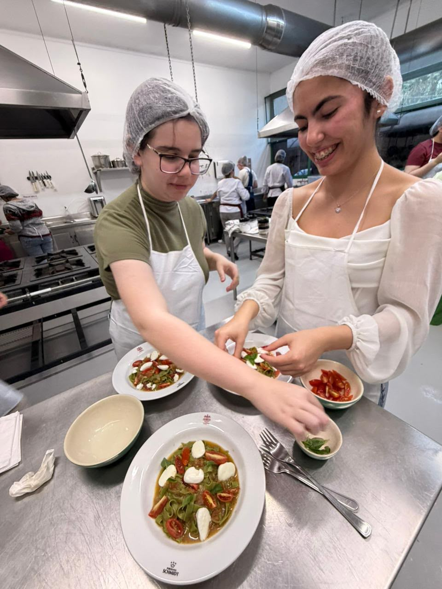
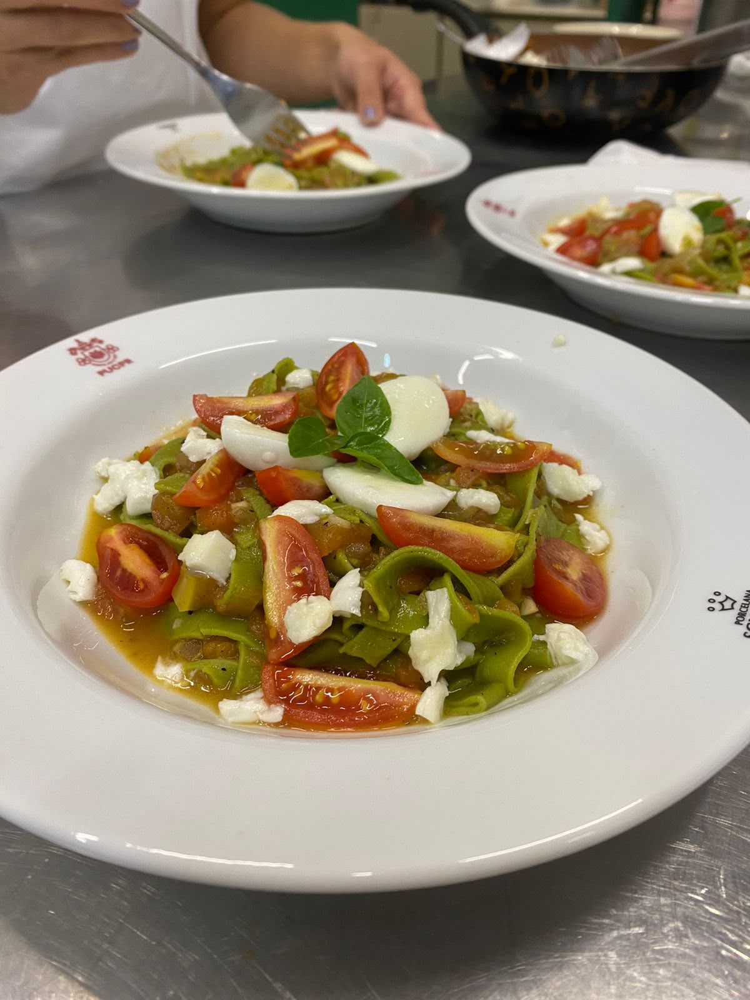
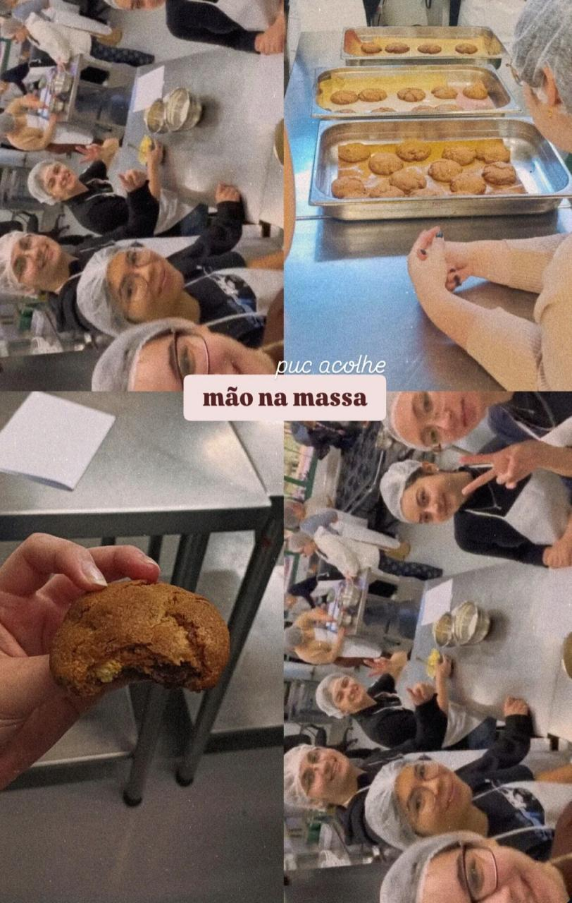
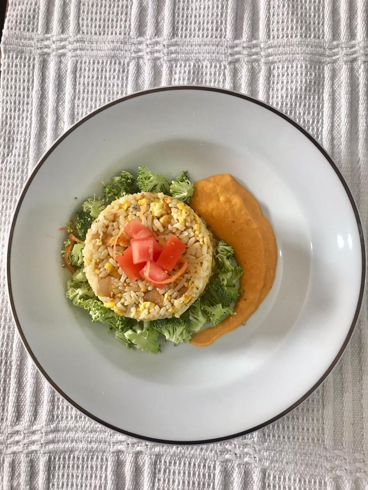
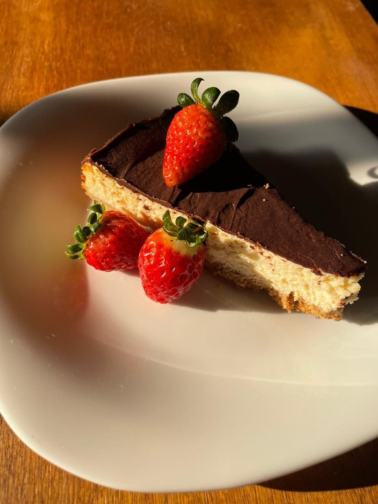
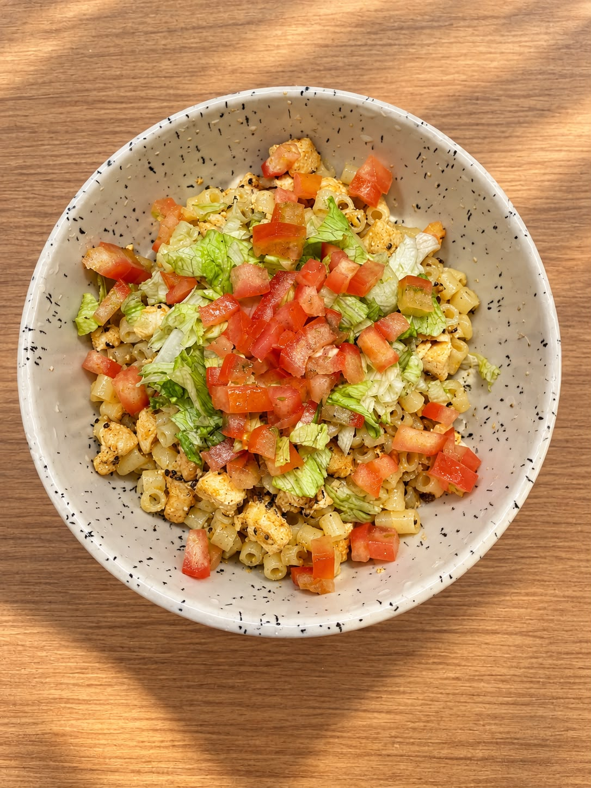

Sector 03 // Kitchen & Craft
Kitchen
Cooked dishes, culinary experiments, and hands-on gastronomy, including participation in PUCPR’s “Mão na Massa” workshop.
PUCPR — “Mão na Massa” Workshop
Practical culinary workshop experience at PUCPR
Workshop Experience
Gastronomy at PUCPR
Gastronomy classes every last friday of the month. We learn to make everything from warm cookies to fresh, handmade, Pasta. It's my favorite friday of the month.



Dishes & Experiments
Cooking trials, recipes, and techniques

Spring Fried Rice with Tomato, Carrot, and Garlic Sauce and Garnish

Cottage Cheese Cheesecake with Chocolate Ganashe and Strawberry Garnish
